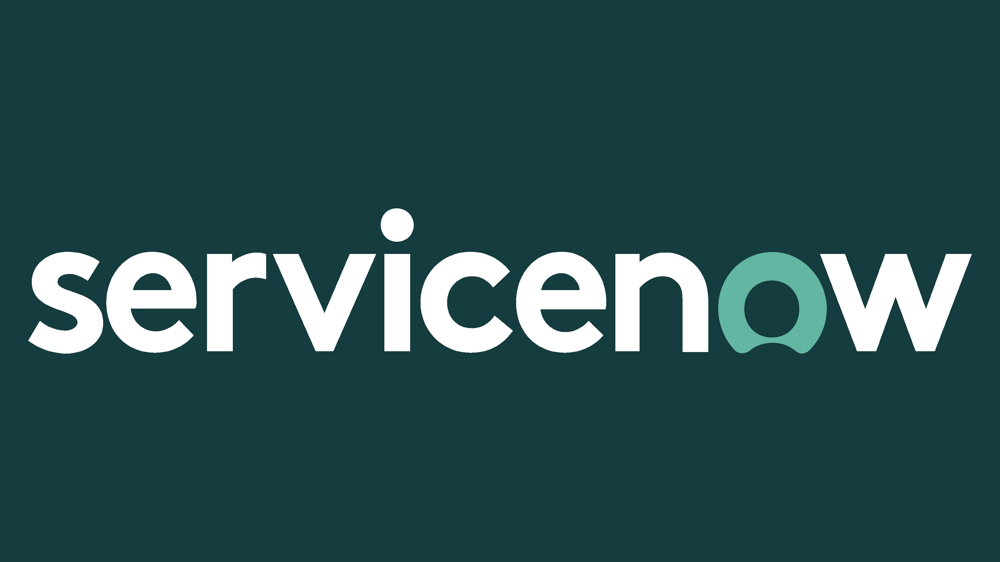

JavaScript & Typescript

Usados para criar e controlar a lógica e interatividade em páginas web e aplicações, com TypeScript oferecendo tipos estáticos para maior segurança no código.
Node.js & Express
Utilizados para construir e gerenciar servidores web e APIs REST, permitindo a criação de aplicações escaláveis e eficientes no lado do servidor.
React.js & Angular.js
Frameworks para desenvolvimento de interfaces de usuário ricas e interativas, facilitando a criação de aplicações web responsivas e dinâmicas.
HTML & CSS
Fundamentais para estruturar e estilizar páginas web, garantindo que elas sejam visualmente atraentes e adaptáveis a diferentes dispositivos.
Bootstrap

Framework para design responsivo e desenvolvimento rápido de interfaces web, proporcionando componentes pré-construídos e estilos consistentes.
Python

Linguagem versátil para desenvolvimento de scripts, automação, e análise de dados, com uma sintaxe clara e poderosa para diversas aplicações.
Docker

Plataforma para criar e gerenciar contêineres, facilitando a criação de ambientes de desenvolvimento e produção isolados e portáteis.
MYSQL & Sequelize
Usados para gerenciamento e manipulação de bancos de dados relacionais, com Sequelize proporcionando uma interface ORM para facilitar a interação com o banco de dados.
Servicenow
Plataforma para automação de processos de TI e gestão de serviços, ajudando a melhorar a eficiência e a consistência em operações de TI.
Git & GitHub

Ferramentas para versionamento de código e colaboração em projetos, permitindo o controle de alterações e a integração contínua entre desenvolvedores.
Comandos linux

Utilizados para gerenciar e automatizar sistemas operacionais baseados em Linux, oferecendo controle e flexibilidade na administração de servidores e ambientes de desenvolvimento.
POO
Paradigma de programação que organiza o código em objetos e classes, facilitando a criação de sistemas modulares e reutilizáveis.
metodologias Ágeis
Abordagens para gerenciamento de projetos que promovem a flexibilidade e a colaboração, melhorando a capacidade de responder a mudanças e entregar valor contínuo.
Soft-Skills
Competências interpessoais essenciais para comunicação eficaz, trabalho em equipe e resolução de problemas, que complementam a habilidade técnica e facilitam a colaboração bem-sucedida.